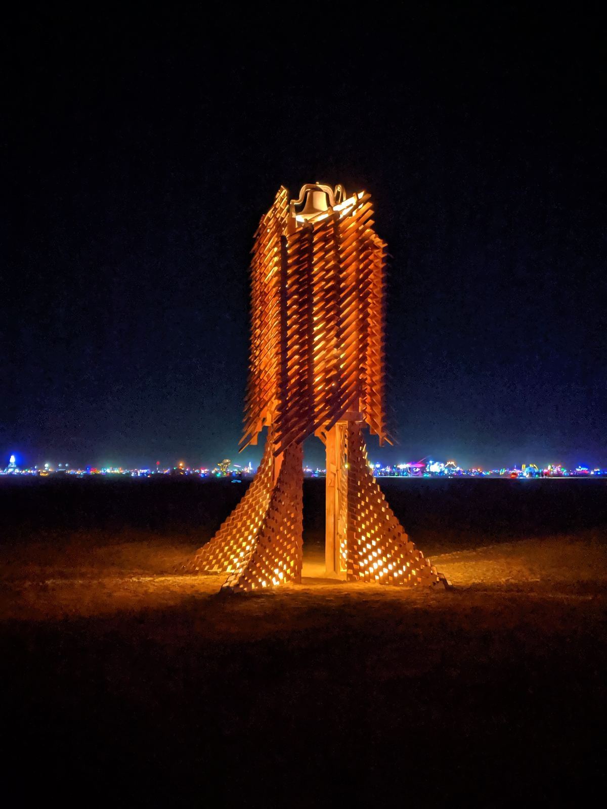
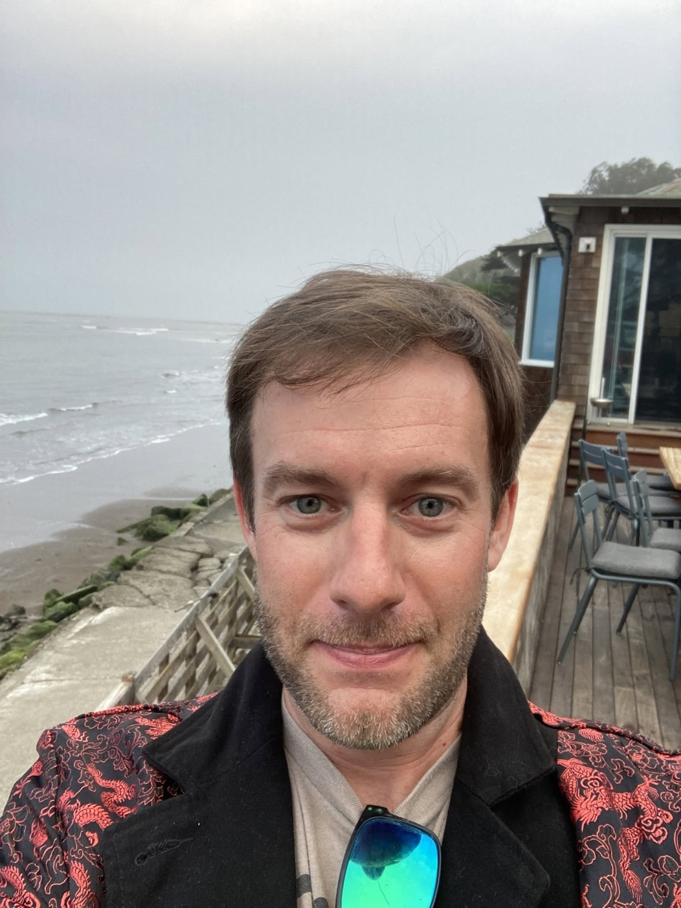
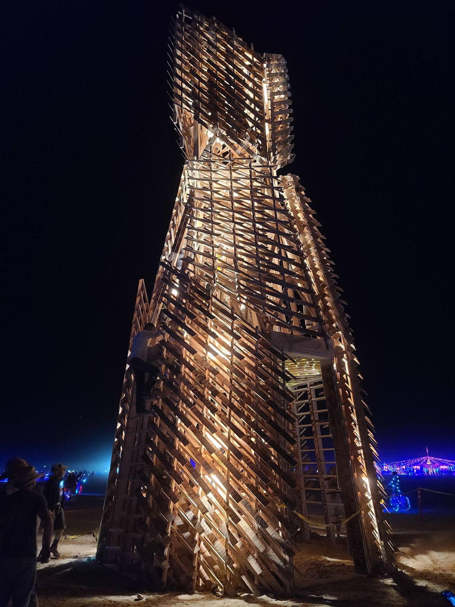
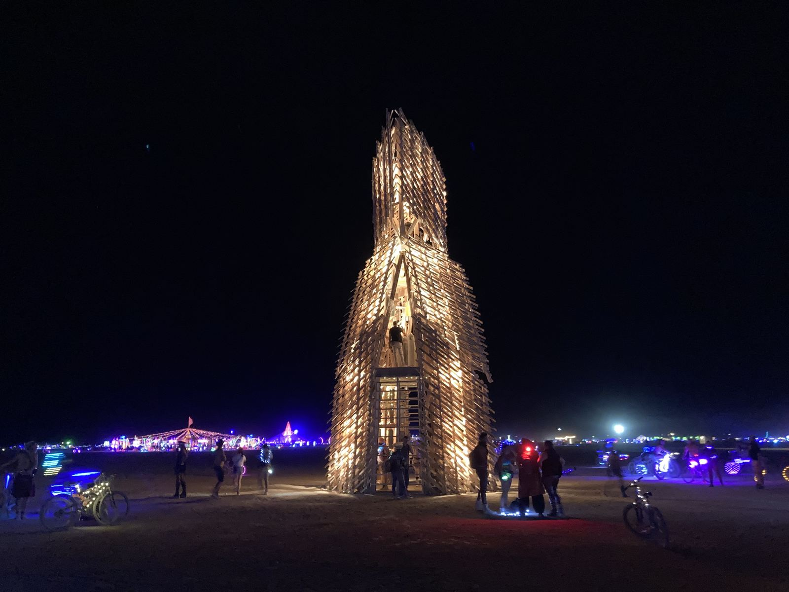
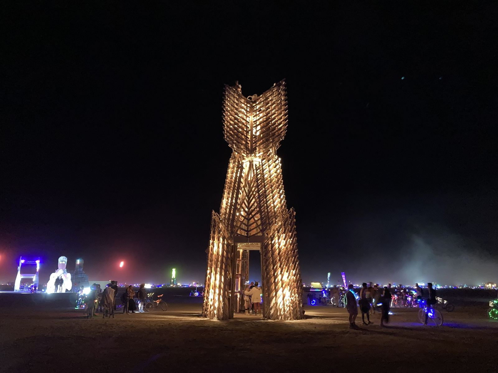

2019
The Carillon
[Steve: a few words about the 2019 Carillon: the idea behind it, the build, a moment on the playa.]

§ About the artist

Steve is a Bay Area architect, and 2027 will be his fifteenth Burn. He has spent more than a decade helping raise the Temple, and now he leads it.
He worked on the Temple’s architecture teams in 2014, 2016 and 2023, and was a co‑lead artist for the 2017 Temple. Away from the Temple, he has built the Carillon, a bell tower that has returned to the playa in 2019, 2022 and 2025, the last time within the Man pavilion.
& At his side
Steve’s wife Tabitha will be with him for the whole journey. 2027 is her fifteenth Burn too, and she has served three terms as mayor of the Hair of the Dog (HOTD) theme camp.
01 Beyond the Temple
A bell tower built for the playa, returning in 2019, 2022 and 2025, the last time within the Man pavilion.
2019
[Steve: a few words about the 2019 Carillon: the idea behind it, the build, a moment on the playa.]

2022
[Steve: a few words about the 2022 Carillon: what changed from 2019, the crew, how people used it.]



02 On the playa
03 What’s in a name?
Simply, The Temple.
The name is left open on purpose, so the crew and the community can bring their own meaning to it.
The Temple has always been a space for grief and reflection against the backdrop of Burning Man. This year’s Temple continues that rich and evolving tradition.
Join the crew